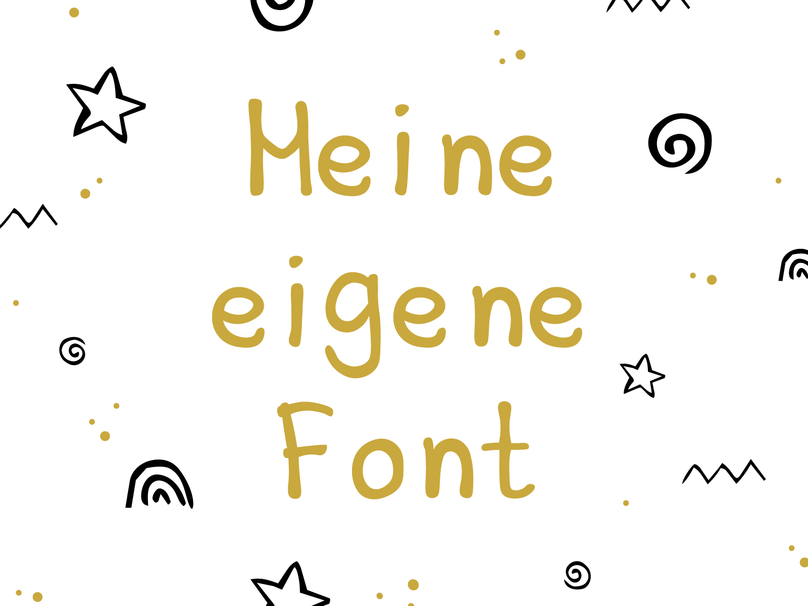

Type Design · Personal Project · 2026
Schrift, aber
by Carole.
Aus meinem Interesse an Typografie entstand ein persönliches Experiment: meine erste eigene handgezeichnete Schrift. Ich entwickelte die Buchstaben zunächst analog, digitalisierte und vereinheitlichte die Formen in Illustrator und setzte sie anschliessend in FontForge zu einer tatsächlich nutzbaren Font zusammen.

Ergebnisse